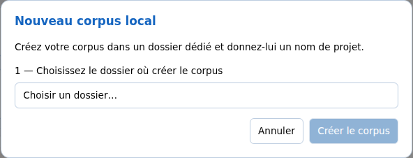

Découvrir et démarrer
Créer et retrouver un corpus local
Un corpus réunit les entretiens d’une étude et leurs réglages communs : thèmes, variables, règles de pseudonymisation, etc. Vous devez en créer un même si vous ne comptez travailler que sur un seul entretien.
Un corpus local est enregistré sur votre ordinateur. Dans SonalPi V2, un dossier correspond à un corpus. Vous choisissez ce dossier lors de la création ; vous le sélectionnerez aussi pour rouvrir le corpus.
Avant de commencer
Préparez un dossier dédié à votre étude, de préférence vide, dans un emplacement que vous saurez retrouver. Par exemple : un dossier Enquete-associations dans vos Documents. Ne choisissez pas votre dossier Documents tout entier.
Le dossier et le projet peuvent porter des noms différents. Le nom du projet sera affiché lorsque vous travaillerez dans le corpus ; conservez aussi un nom de dossier facile à reconnaître.
Créer le corpus
- Sur l’accueil de SonalPi, dans Vos corpus, cliquez sur Nouveau corpus local.
- Cliquez sur Choisir un dossier…, puis sélectionnez le dossier dédié à votre étude.
- Dans Quel est le nom du projet ?, remplacez si nécessaire le nom proposé. Par exemple : Enquête dans les associations.
- Cliquez sur Créer le corpus.

Le corpus est créé et s’ouvre dans Préparer et suivre. Il ne contient encore aucun entretien. Les lignes proposées dans le tableau de bord sont des repères de suivi, pas des entretiens importés. Vous pouvez commencer à organiser votre étude ou passer dans Importer et traiter pour ajouter vos documents.
Annuler ferme la fenêtre sans créer de corpus.
Si le dossier contient déjà un corpus
SonalPi affiche Ce dossier contient déjà un corpus : il sera ouvert tel quel, sans rien remplacer. Le bouton devient Ouvrir : vous retrouvez le corpus existant, vous n’en créez pas un second dans le même dossier.
Pour commencer une autre étude, choisissez un autre dossier dédié.
Retrouver un corpus récent
- Revenez à l’accueil général de SonalPi avec Accueil, en haut de la fenêtre.
- Dans Reprendre votre travail, cliquez sur le corpus récent voulu. Ce bloc est à droite sur une grande fenêtre, en premier sur une fenêtre étroite.
Pour un corpus local, cette liste affiche actuellement le nom du dossier, avec son chemin en dessous. Dans notre exemple, cherchez Enquete-associations, même si vous avez nommé le projet Enquête dans les associations.
Le corpus retrouve le dernier espace consulté sur ce poste. Un entretien n’est pas rouvert automatiquement.
Le bouton ✕ d’une ligne retire seulement ce raccourci des Récents. Il ne supprime ni le corpus ni ses documents.
Ouvrir un corpus qui n’est pas dans les Récents
- Sur l’accueil, cliquez sur Ouvrir un corpus local.
- Sélectionnez le dossier du corpus.
Choisissez le dossier qui contient le fichier corpus.json, pas le fichier lui-même ni le sous-dossier des entretiens. Ne choisissez pas un dossier vide pour retrouver un ancien travail.
Si votre corpus provient de SonalPi1 et contient un fichier .crp, il faut utiliser la migration V1 vers V2 plutôt que cette ouverture ordinaire.
Ce qui est conservé dans votre dossier
La V2 conserve les données du corpus dans son dossier. Vous n’avez pas à modifier vous-même ses fichiers pour travailler : utilisez les commandes de SonalPi.
Attention : un enregistrement audio associé à un entretien peut rester dans un autre emplacement. Le seul dossier du corpus ne garantit donc pas que vous avez aussi une copie de tous les enregistrements. Évitez de déplacer ces fichiers sans vérifier ensuite que SonalPi les retrouve.
Pour conserver ou déplacer l’étude, consultez Retrouver ses fichiers, sauvegarder et déplacer.
Créer un corpus local ne le partage pas automatiquement avec des collègues. Pour travailler à plusieurs sur le même corpus, il faut utiliser un corpus distant.
Une question ? Consultez les questions fréquentes.